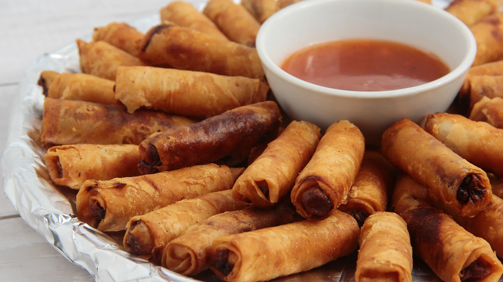

What is Lumpia?

Lumpia or Lumpiang Shanghai is a type of Filipino egg roll. The basic
filling is composed of ground pork along with minced onions, carrots, and
seasonings such as salt and ground black pepper.
Ingredients
Marinade
- 50 pieces lumpia wrapper
- 3 cups cooking oil
- 1 1/2 lbs ground pork
- 2 pieces onion minced
- 2 pieces carrots minced
- 1 1/2 teaspoons garlic powder
- 1/2 teaspoon ground black pepper
- 1/2 cup parsley chopped
- 1 1/2 teaspoons salt
- 1 tablespoon sesame oil
- 2 eggs
Cooking Instruction
- Combine all filling ingredients in a bowl. Mix well.
-
Scoop around 1 to 1 1/2 tablespoons of filling and place over a piece of
lumpia wrapper. Spread the filling and then fold both sides of the
wrapper. Fold the bottom. Brush beaten egg mixture on the top end of the
wrapper. Roll-up until completely wrapped. Perform the same step until
all mixture are consumed.
-
Heat oil in a cooking pot. Deep fry lumpia in medium heat until it
floats.
- Remove from the pot. Let excess oil drip. Serve. Share and enjoy
Back to the top
Home Homie